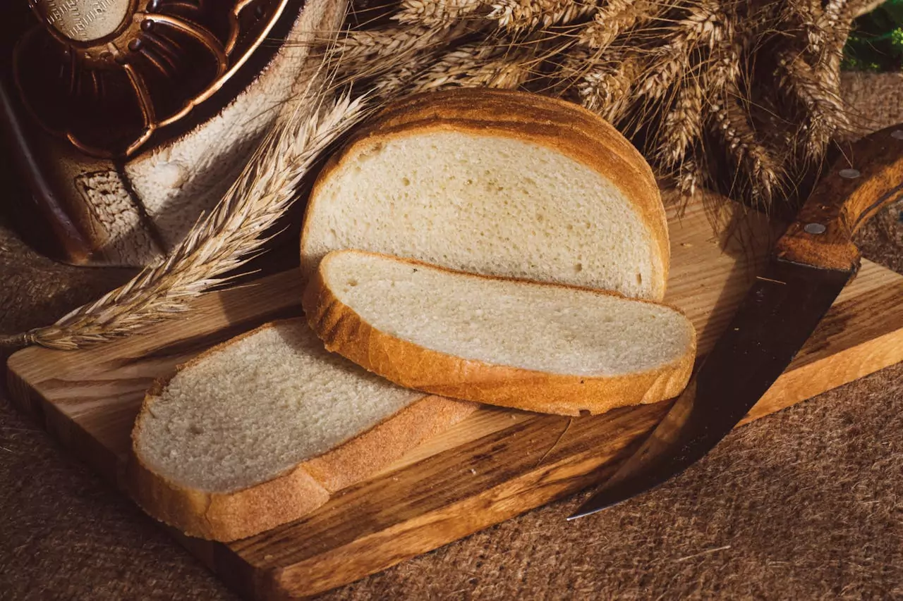
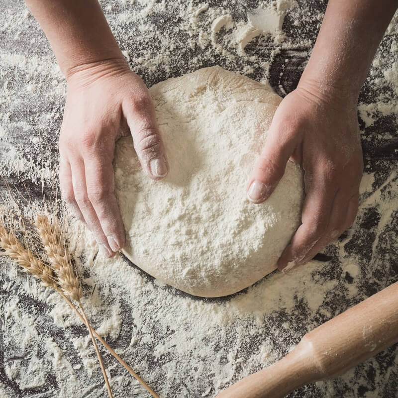
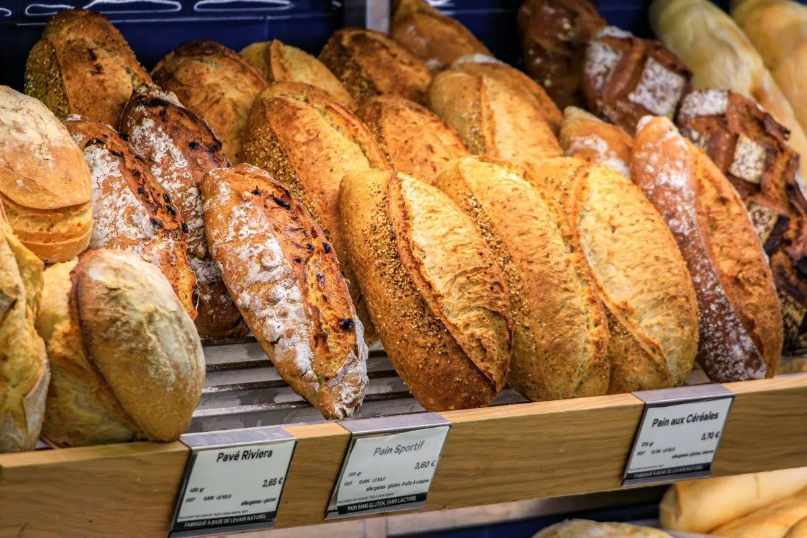
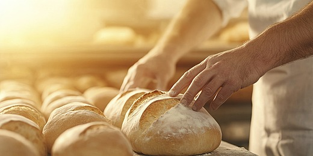
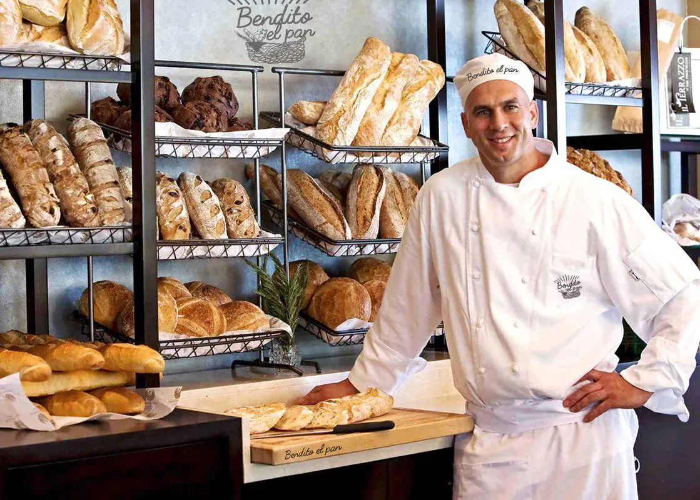

Padaria do bairro
Do bairro, para a Web
Sobre nós
Nós começamos com um sonho, e hoje, temos nosso estabelecimento com nosso próprio site e clientes que diariamente vem até nós para se deliciar com nossa variedade de produtos que conquistaram sua confiança.
Nossa história começou em 2005, com o proprietário Joaquim Biancourt, ele deu início à criação artesanal de massas e pães em sua residência, com o passar dos anos, houve uma evolução do projeto, isso ocasionou na expanção de seu negócio e o que era um sonho acabou se tornando realidade, conseguimos um novo local, com uma estrutura própria.
Nosso jeito de fazer
O nosso diferencial, aqui na padaria do bairro está no carinho em que realizamos nossa produção diária, nossa massa é sempre preparada no mesmo dia do consumo, garantindo uma excelente qualidade e frescor a cada mordida.
Sempre atendemos uma política de solidariedade com nosso cliente, aqui, o consumidor é tratado como um amigo, pois, por se tratar de um comércio modesto em uma comunidade localizada, nós praticamos e preservamos a boa vizinhança.
Qualidade que garante
- Pães frescos

- Nossa própria massa
- Qualidade artesanal
- Aquele toque de casa
- O melhor preço




Nossos produtos
| Categoria | Produto | Preço | Descrição |
|---|---|---|---|
| Massa | Pão Caseiro | R$ 12,00 | Pão caseiro macio |
| Massa | Pão Francês | R$ 0,95 | Pão francês quentinho |
| Bolo | Cup Cake | R$ 4,50 | Bolinho doce com cobertura |
| Doce | Brigadeiro | R$ 1,00 | Chocolate saboroso e cremoso |
| bebida | Suco | R$ 5,00 | Suco natural feito na hora, qualquer sabor |
Horário de funcionamento
| Segunda a Sexta |
das 06:00 às 16:30 |
|---|---|
| Sábado | das 07:00 às 11:00 |
| Domingo e Feriados |
das 06:00 às 10:30 |
Dica do dia
Receita: Bisnaguinha caseira